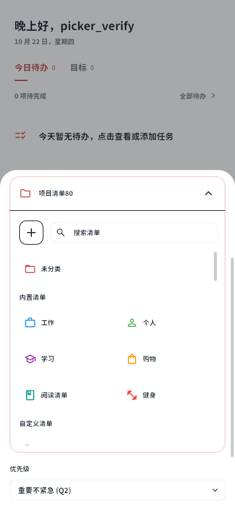
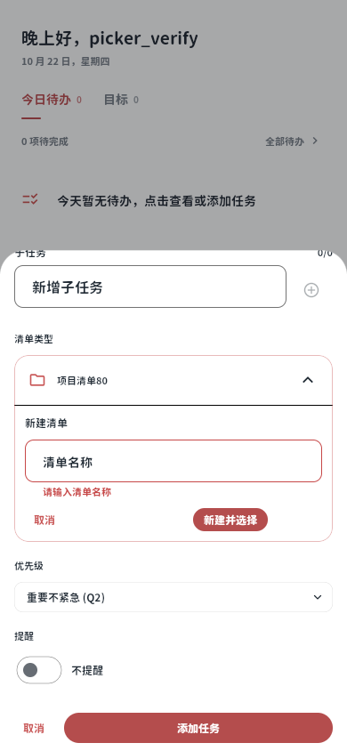
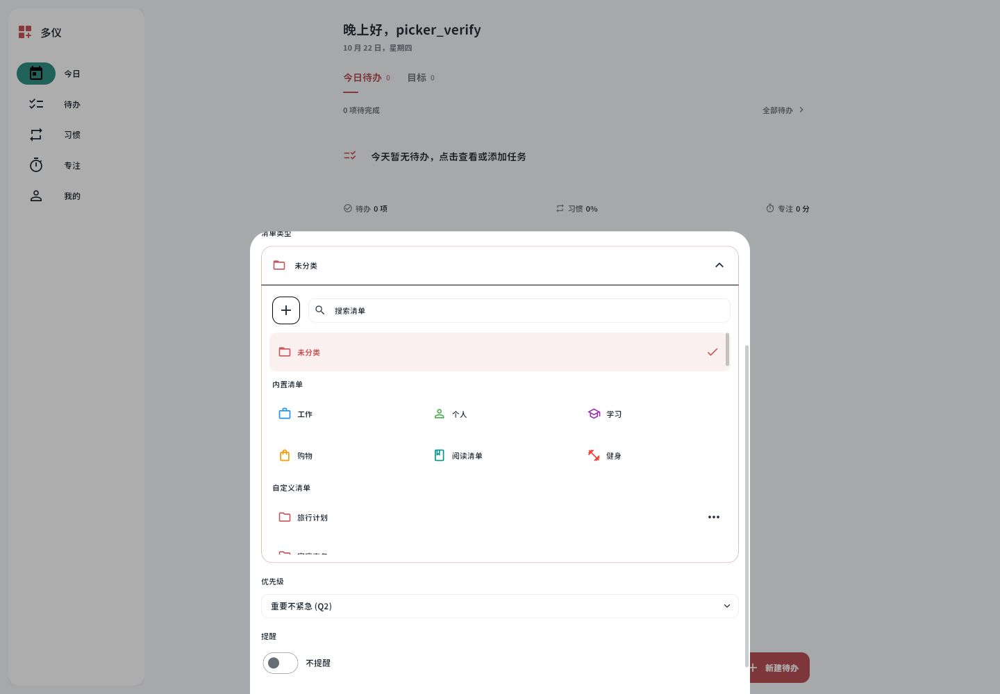
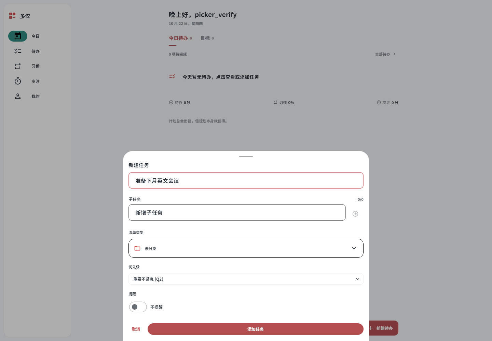
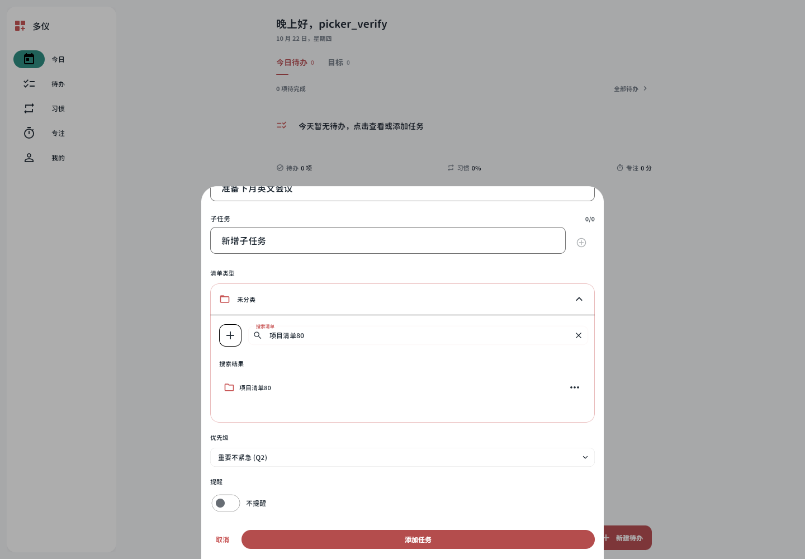
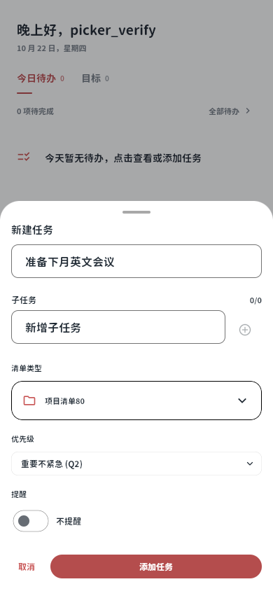
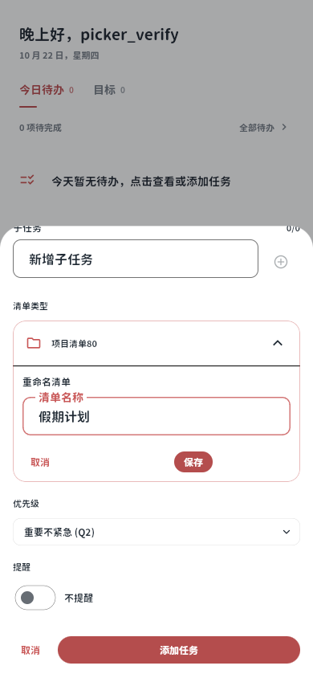
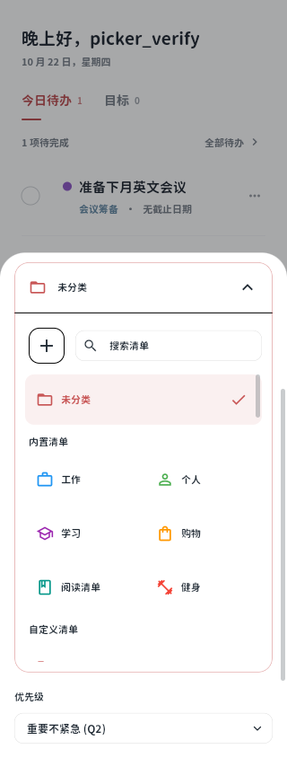

清单收纳选择器
实际 Flutter release Web 截图。独立测试账号，80 个空清单。验证说明


桌面：展开后的分组与搜索

桌面：默认收起

桌面：直接搜索第 80 个清单

手机：选择后收起

手机：同一面板内重命名

手机：新建后自动选中
320px 窄屏

实际 Flutter release Web 截图。独立测试账号，80 个空清单。验证说明







